Год Героев России Белоярского городского округа
Герои России
Герою Российской Федерации вручается знак особого отличия — медаль «Золотая Звезда».
Звание Героя Российской Федерации, наряду с учреждённым в 2013 году званием Героя Труда Российской Федерации, относится к отдельному виду государственных наград — высшим званиям, которые в иерархии государственных наград Российской Федерации находятся на первом месте.
Белоярский округ - один из самых молодых округов Свердловской области. Он был образован в 1992 году. Но, несмотря на свою молодость, округ имеет богатую историю. Здесь жили и трудились многие замечательные люди, которые внесли большой вклад в развитие округа. Среди них - ветераны Великой Отечественной войны, труженики тыла, участники локальных конфликтов.
Но что за день такой "Год Героев России"? «Год Героев России» – уникальный проект, реализуемый организацией «Герои Урала» и муниципалитетами Уральского федерального округа. 25 января сразу в четырех территориях Белоярского городского округа состоится торжественное открытие уникального тематического года. В рамках него во всех территориях городского округа (а их более 40), пройдет комплекс гражданско-патриотических мероприятий с участием Героев Российской Федерации, Героев Советского Союза, героев СВО и других выдающихся людей.
25 января в 12:30 в 3-х отдаленных от райцентра поселках – Совхозном, Кочневском и Косулино – о старте «Года Героев» объявят Герои Российской Федерации Игорь Родобольский, Олег Касков, Дамир Юсупов и Герой Советского Союза Николай Кравченко.
25 января в 17:00 торжественная церемония открытия «Года Героев России» состоится в Белоярском районном Доме культуры. Значимость проекта для территории неоспорима. Доказательство тому и зрительный, зал, который вместил почти в половину больше зрителей, чем количество мест, и почетные гости - депутат Законодательного Собрания Свердловской области Вячеслав Вегнер, заместитель управляющего Южным управленческим округом Роман Валов, руководитель представительство российского общества "Знание" в УФО Иван Попп, руководители муниципалитетов, государственных и муниципальных учреждений, ветераны боевых действий, школьники и юнармейцы.
В рамках открытия «Года Героев», в Белоярском также пройдет заседание Координационного Совета по патриотическому воспитанию Южного управленческого округа Свердловской области.
Творческое сопровождение мероприятия обеспечит ансамбль Главного управления МВД России по Свердловской области «Сердце Урала».
Проект «Год Героя» реализуется в регионе уже 6 лет общественной организацией «Герои Урала» при поддержке Аппарата полномочного представителя Президента России в УрФО, Свердловского регионального отделения партии «Единая Россия», Законодательного Собрания Свердловской области, Регионального центра патриотического воспитания Свердловской области, всероссийского общества «Знание».
Мероприятия в рамках «Года Героев России» в разное время уже прошли в Ирбите, Верхотурье, Богдановиче, Карпинске и еще 10 городах области.
В 2024 году «Год Героев России» пройдет на 4-х территориях – в Белоярском, Красноуральском, Арамильском городских округах Свердловской области и в городе Губкинском Ямало-Ненецкого автономного округа.
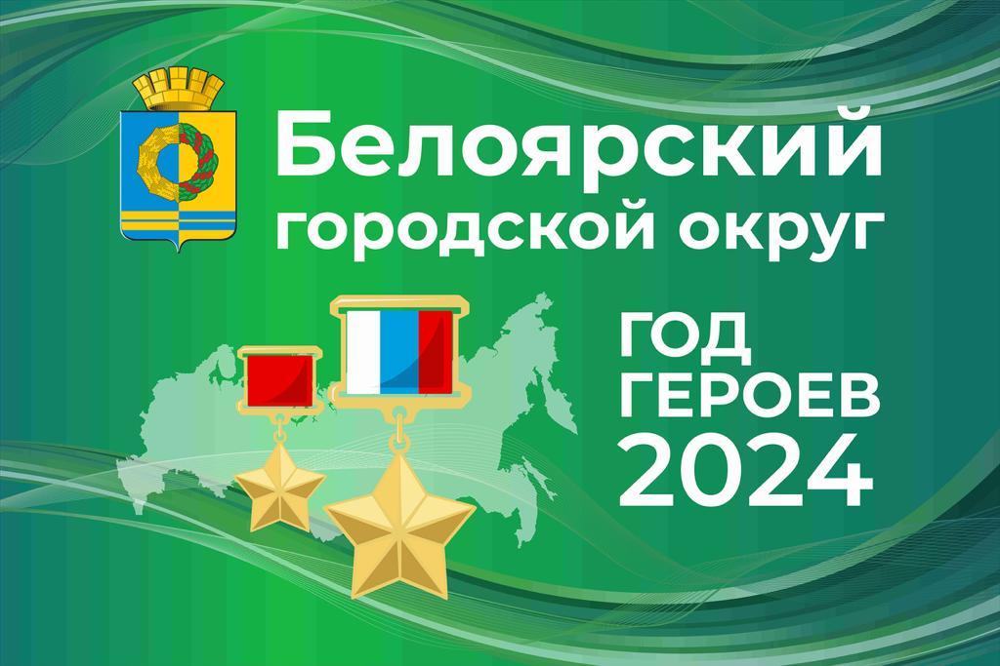Встреча школьников и студентов с Героями России
«Мы сейчас занимаемся молодёжью, особенно на Урале, потому что для меня Урал очень дорог. Я вам скажу, что Урал — сердце России, если сердце России начнёт распадаться — вся Россия распадётся. Урал — это победа!» — говорит Герой Российской Федерации Владимир Алимов.
Ветераны прокуроры Белоярского района
В годы Великой Отечественной войны на фронт ушли более 10 тысяч жителей Белоярского округа. Они воевали на всех фронтах, от Москвы до Берлина. Многие из них погибли, защищая Родину. Но те, кто вернулся домой, продолжали трудиться на благо округа. Но
Баженов Александр Михайлович, прокурор Белоярского района
Родился 10 августа 1905 года в деревне Притыка Зайковского района Свердловской области в семье крестьянина-бедняка.
В 1917 году окончил сельскую школу. Работал в хозяйстве родителей, затем плотником. В 1927 году призван на военную службу. Демобилизовавшись в 1929 году прошел бухгалтерские курсы, после чего работал счетоводом, заведующим райсберкассы, а затем председателем сельсовета. В марте 1932 года вновь призван в Красную армию, где исполнял обязанности завделопроизводством штаба 195 стрелкового полка. В 1933 году демобилизован, после чего участвовал в строительстве заводов в г.Свердловске, работал в Белоярском районе в Чернобровском совхозе. В 1936 году поступил в Свердловскую юридическую школу, где одновременно был парторгом. В октябре 1937 года досрочно окончил школу и был избран членом Свердловского областного суда, где работал до октября 1938 года. В дальнейшем работал ревизором, народным судьей в Еланском районе, а затем в Туринском районе. 12.11.1941 года призван Зайковским РВК в РККА.
Служил в 170 стрелковой дивизии, сформированной в ноябре-декабре 1941 года в Молотовской (Пермской) области, в должности председателя военного трибунала одновременно участвуя в боевых действиях дивизии с 1 апреля 1942 года по 9 мая 1945 года. По формированию дивизия направлена на Северо-Западный фронт, где в течении 1942-1943 годов вела бои в районе Валдая, в начале 1943 года участвует в Демянской операции в Новгородской области, где несет большие потери, после чего отведена в резерв. В мае 1943 года дивизия поступила в распоряжение Центрального фронта, принимает участие в Кромско-Орловской операции, преследуя отходящего врага на запад, ведет ожесточенные бои у города Кромы. Затем принимает участие в Гомельско-Речицкой наступательной операции. В ночь на 22.09.1943 года дивизия форсировала Днепр в районе Лоева, отличилась при освобождении Речицы, затем вклинилась в оборону противника в направлении Бобруйска. Находясь в распоряжении Белорусского фронта в июне 1944 года в ходе Бобруйской операции дивизия прорывает оборону противника в районе Рогачева, форсирует реку Друть. После взятия Бобруйска дивизия продолжила наступление северо-западнее Бреста, освобождает Порозовской район, прорывает оборону противника в районе польского города Ружан, с ходу форсирует реку Нарев и захватывает плацдарм на противоположенном берегу, где завязываются тяжелейшие бой. В начале 1945 года принимает участие в Млавско-Эльбингской операции 2 Белорусского фронта под командованием маршала Рокоссовского К.К. Дивизия, находясь в составе 48 армии, ведет бои при прорыве и ликвидации Хайльсбергского укрепрайона, овладевает городом Мюльхаузен и выходит на побережье Балтийского моря, отрезав противника в Восточной Пруссии от Германии.
Майор юстиции Баженов А.М. за подготовку частей дивизии к наступлению на Орловско-Курском направлении награжден орденом Красной Звезды, за самоотверженную работу на фронте борьбы с немецкими захватчиками и прорыв обороны на реке Друть награжден орденом Отечественной войны II степени, награжден медалью за взятие Кенигсберга и медалью за победу над Германией в войне 1941-1945 годов.
В органы прокуратуры принят после демобилизации 26 февраля 1946 году на должность прокурора Белоярского района. 01.04.1950 года младший советник юстиции Баженов А.М. освобожден от должности прокурора Белоярского района по состоянию здоровья.
Лыжин Пётр Иванович, прокурор Белоярского района

Родился 22 июня 1922 года в деревне Лыжина Еланского (Байкаловского) Свердловской области в семье крестьянина-середняка.
В 1941 году окончил Еланскую среднюю школу. В июле 1941 года призван в ряды Советской Армии. До октября 1942 года являлся курсантом летных школ первоначального обучения ВВС СССР. Затем назначен командиром отделения 181 отдельного батальона аэроремонтного обслуживания ВВС СССР с дислокацией в Оренбургской области. С мая 1943 года являлся курсантом военной школы авиамехаников ВВС СССР. С мая 1944 года по май 1945 года нес службу авиационным механиком самолета 168 гвардейского авиационного истребительного Краснознаменного полка 236-й истребительной Львовской Краснознаменной авиационной дивизии в составе 3-го Украинского фронта в звании гвардии сержанта.
В составе 168-го гвардейского авиационного истребительного полка участвовал в боях за освобождение городов и крупных железнодорожных узлов Орел, Белгород, Харьков, Киев, Звенигородка, Шпола, Смела, Богуслав, Канев, Бобринская, Цветково, Мироновка, Шепетовка, Изяславль, Шумск, Ямполь, Острополь, Станислав, Яссы, Тыргу-Фрумос, Унгень, Васлуй, Кишинев, Роман, Бакэу, Бырлад, Хуши, Фокшаны, Рымникул Сэрат (Рымник), Плоешти, Бухарест, Белград и других городов Румынии, Югославии и Венгрии. Дважды был ранен. Легендарная Ясско-Кишиневская операция, в которой принимал участие Лыжин П.И., длилась с 20 до 29 августа 1944 года на территории Молдавии и Румынии. Наступление было подкреплено ударами авиации по сильным опорным пунктам и огневым позициям артиллерии противника. Нашим войскам противостоял 4-й воздушный флот армии «Южная Украина». К исходу 21 августа войска Красной армии, преодолев все три оборонительные полосы, овладели городами Яссы и Тыргу-Фрумос, тем самым взяв два мощных укреплённых района за минимальный срок. 3-й Украинский фронт успешно продвигался на южном участке, на стыке 6-й немецкой и 3-й румынской армий. В ходе данной операции потери нашей авиации составили 111 боевых самолетов. Немецкие и румынские войска понесли большие потери в живой силе и боевой технике, особенно на главной полосе обороны, и начали поспешно отступать. За первые два дня операции были полностью разгромлены 7 румынских и 2 немецких дивизии. 24 августа наши войска заняли Кишинев, а 27 августа Фокшаны. Через 2 дня после окончания операции советские войска вошли в Бухарест. Ясско-Кишинёвская операция оказала большое влияние на дальнейший ход войны на Балканах. В ходе неё были разгромлены основные силы группы армий «Южная Украина», выведена из войны Румыния, были освобождены Молдавия и часть Украины. В ходе операции советские войска потеряли 12,5 тысяч человек, тогда как немецкие и румынские войска лишились 18 дивизий. 208600 немецких и румынских солдат и офицеров попали в плен. 20 октября был полностью освобожден Белград. За непосредственное участие в героическом штурме и освобождении Белграда Лыжин П.И. награжден медалью «За освобождение Белграда».
С мая 1945 года по сентябрь 1945 года в связи с ранением находился в эвакогоспитале в Румынии. Затем нес службу заведующим склада лазарета управления тыла и фронта. С февраля 1947 года работал инспектором ЦСУ Еланского района Свердловской области. В 1948 году поступил в Свердловскую юридическую школу, а затем заочно в Свердловский юридический институт, который окончил в 1955 году.
С июля 1950 года работал в органах прокуратуры Свердловской области последовательно занимая должности следователя прокуратуры Егоршинского района, прокурора Шалинского района, помощником прокурора г.Ревды, а с ноября 1960 года по 1973 год прокурора Белоярского района. С 1973 по 1975 год являлся народным судьей Белоярского района. А с октября 1975 года вновь занимал должность прокурора Белоярского района. Избирался депутатом Белоярского районного совета, был лектором общества «Знание» и членом общественной приемной газеты «Уральский рабочий».
Лыжин П.И. награжден орденами Красной Звезды, Отечественной войны II степени, медалями «За победу над Германией в Великой Отечественной войне 1941-1945 гг», «За освобождение Белграда», «20 лет Победы», «30 лет Победы», «40 лет Победы», «50 лет вооруженных сил СССР», «70 лет вооруженных сил СССР», «Ветеран труда», «За доблестный труд. 100 лет со дня рождения ВИЛенина», знаками «25 лет Победы», «50 лет советской прокуратуре», «60 лет советской прокуратуре». Указом Президиума Верховного Совета РСФСР в 1972 году награжден Почетной Грамотой.
Петра Ивановича Лыжина помнят как принципиального и честного человека, последовательного в принятии решений, внесшего своей работой неоценимый вклад в укрепление законности и правопорядка в районе, остающегося образцом для подражания действующим работникам. Работая в прокуратуре и суде Лыжин П.И. зарекомендовал себя с положительной стороны, был скромен, достаточно редко одевал ордена и медали. Всегда готовый дать совет, консультацию по тому или иному делу, не терпящий упрощенчества и ненадлежащего отношения к порученному, таким запомнился Петр Иванович. После выхода на пенсию в 1985г. он много лет работал народным заседателем Белоярского районного суда, применяя свой большой профессиональный опыт, оказывая помощь работникам суда и прокуратуры. По дому все делал своими руками: косил, строил, копал огород. Мог без единого гвоздя сделать деревянные сани. С домашними был строг, но справедлив. Очень любил внуков. В свободное время зимой и летом рыбачил.
Лыжин П.И. приложил немало усилий для того, чтобы прокуратура работала в надлежащих условиях. Благодаря его совместным с председателем районного суда усилиям, в п.Белоярском было построено и принято в эксплуатацию в конце 1979г. здание, в котором прокуратура и суд совместно располагались до 2010 года. В 2002г., отдавая дань памяти, как Хрущелева А.П.(председателя суда), так и Лыжина П.И., на здании Белоярского районного суда была установлена мемориальная доска с их фотографиями.
Умер 30.05.1994 года, похоронен в п. Белоярский Белоярского района Свердловской области.
Труженики тыла
В годы войны на плечи тружеников тыла легла не менее тяжелая задача, чем на плечи фронтовиков. Женщины, старики и дети работали на заводах, фабриках, в колхозах и совхозах. Они обеспечивали фронт всем необходимым - оружием, боеприпасами, продовольствием.
Участники локальных конфликтов
В послевоенные годы многие жители Белоярского округа принимали участие в локальных конфликтах. Они воевали в Афганистане, Чечне, Таджикистане и других горячих точках. Многие из них погибли, выполняя свой воинский долг.
Ветераны Белоярского округа - это люди, которые посвятили свою жизнь служению Родине. Они заслуживают нашего уважения и благодарности. Мы должны помнить их подвиги и всегда быть им благодарны.
Союз ветеранов локальных конфликтов Белоярского ГО
О НАС
В ноябре 2019 года, 8 человек из числа ветеранов Афганистана и Северного Кавказа, собрались за круглым столом и решили: "Союзу быть!" В этот же вечер была создана инициативная группа и поставлены задачи. А если задача есть и она ясна, будьте добры выполнять! Первой и самой основной задачей было поставлено воспитание молодежи в военно-патриотическом плане. И не на бумаге, для отчета, а на деле, чтобы показать остальным (кто не верит в молодежь), что можно и нужно работать в этом направлении. Результаты не заставили себя долго ждать, но это уже совсем другая история. Мы же не стали наслаждаться Победой, а двинулись с новой силой к новым вершинам. Не прекращая военно-патриотическую работу с юнармейцами ветераны решили заявить о себе. Заявить громко и четко, чтобы очнулись бойцы так привыкшие к "гражданке", чтобы увидели все: мы молоды душой, у нас полно сил, море энергии, огромное количество идей, и не просто идей, а идей необходимых всему нашему району. А самое главное - это огромное желание работать. Именно работать! РАБОТАТЬ ВО БЛАГО БУДУЩИХ ПОКОЛЕНИЙ! Но пандемия внесла свои коррективы. Работу с юнармией пришлось временно приостановить, но это не помешало провести празднование 75-летия Великой Победы, с соблюдением всех санитарных норм. Праздник получился ярким, красочным, торжественным!
Это не осталось незамеченным. Военный комиссар предоставил нам уникальную возможность побывать в качестве почетных гостей на Параде Победы в столице среднего Урала. Это событие не только перевернуло мышление ветеранов, они поверили в себя, поверили в свои силы, осознали свою необходимость, убедились в том, что все их старания, вся их работа видна и оценена руководством.


 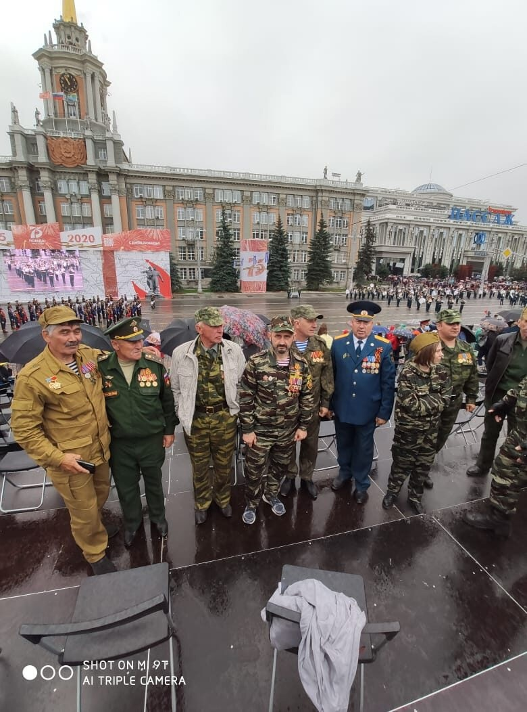
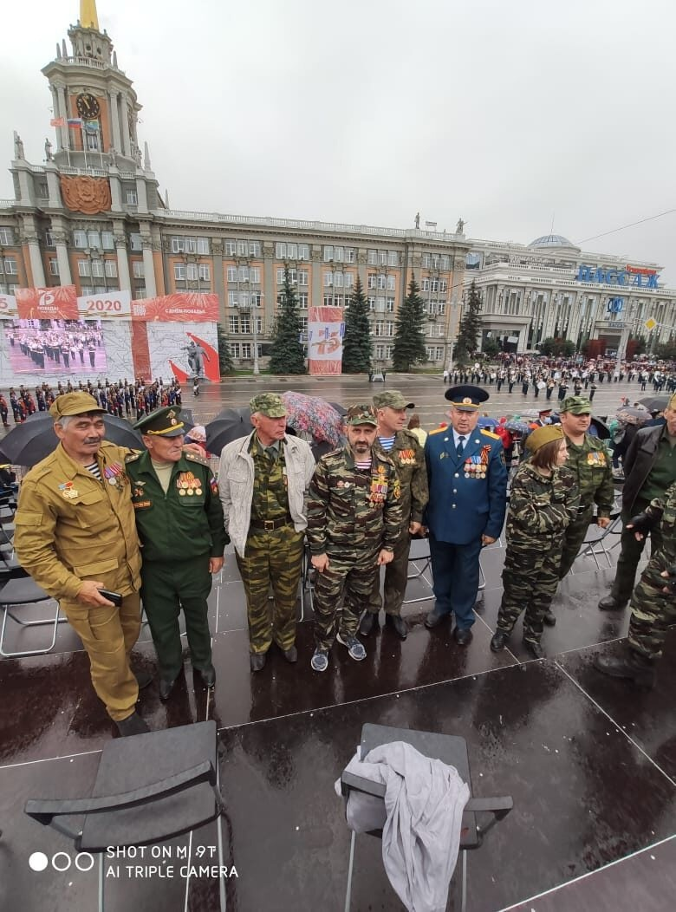

После этого значимого события, ряды недавно созданного Союза ветеранов локальных конфликтов пополнились бойцами-ветеранами, которые принесли с собой новые идеи и, как показало время, этим идеям суждено было сбыться и стать частью истории Союза ветеранов локальных конфликтов. Следующей задачей стояло проведение мероприятия «СВЕЧА ПАМЯТИ», посвященное началу Великой отечественной войны. Как и положено, началось мероприятие 22 июня, ровно в 4 часа. Казалось бы, кому хочется вставать в такую рань, да ещё и ехать кому за 10 км, кому за 15 км? Но ведь поехали! Не поленились! Это говорит о том, что у ветеранов появилось чувство долга, чувство товарищества и сплоченности.
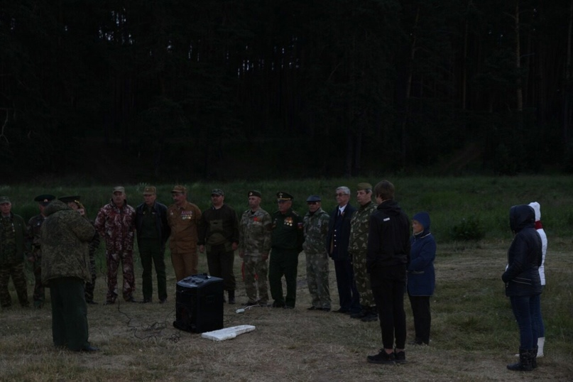 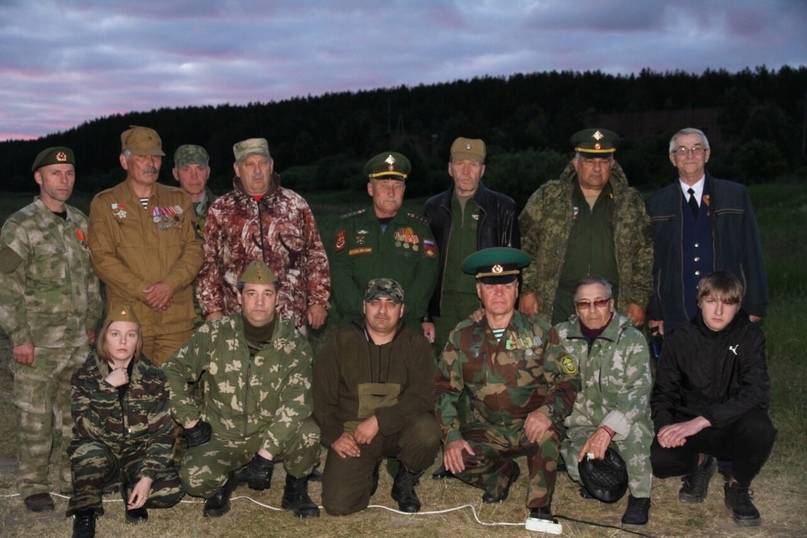
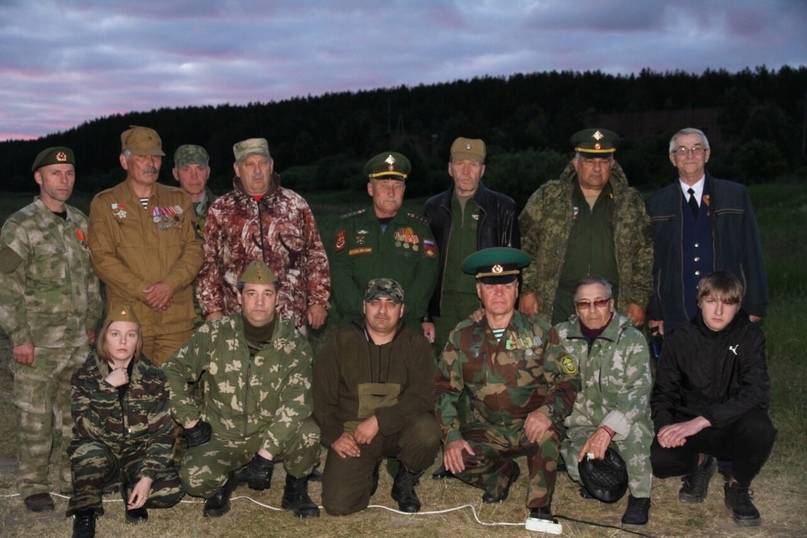
 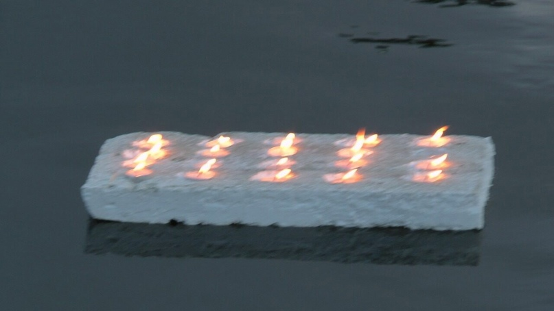
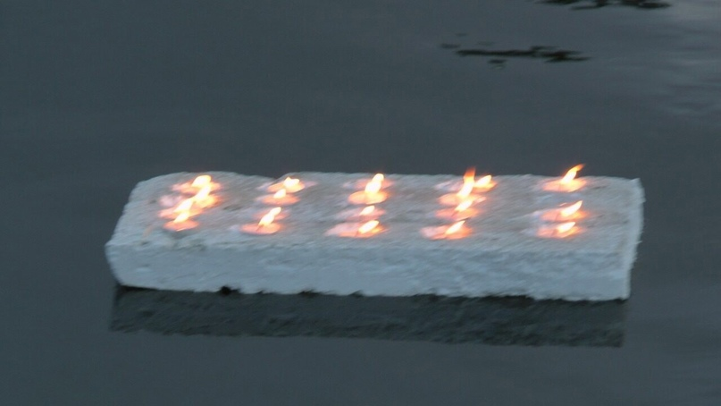
И тут появилась новая идея, не входившая в планы организации. То ли не выспались, то ли и правда «утро вечера мудренее», но возникла мысль поставить памятник, в память о всех участниках вооруженных конфликтов в стране и за рубежом после Победы 1945-го года. Решили установить боевую разведывательно-дозорную машину БРДМ—2. Сказано-сделано. Но одно дело сказать, совсем другое воплотить в жизнь. Мысль намертво отложилось в голове каждого. Лето короткое. Решили форсировать. Нашли машину (это тоже другая история), отреставрирована, нашлись спонсоры, настоящие патриоты своей Родины, которые не задумываясь помогали материалами. О них так же в другой рубрике. Работа шла параллельными курсами одновременно. Одни отвечали за постамент, другие за реставрацию, третьи за материалы. Потребовалось всего 40 дней! Через 40 дней памятник встал в строй, рядом с памятником воинам-афганцам и занял своё достойное место на аллее Славы поселка Белоярский!

 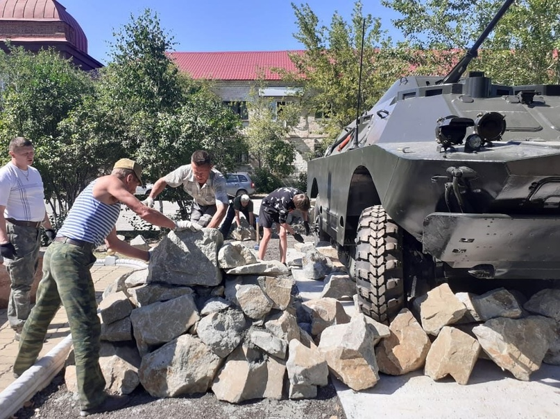
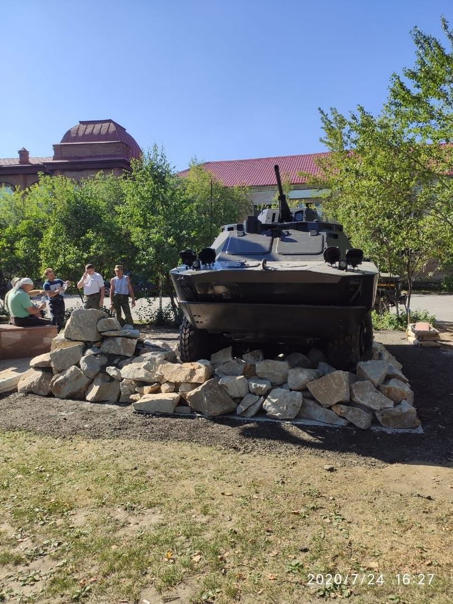
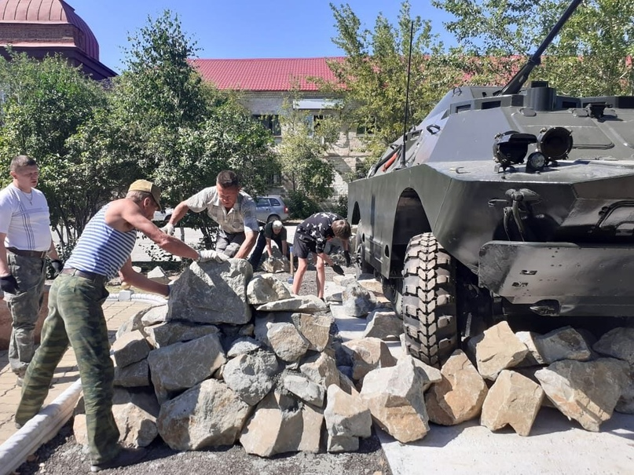
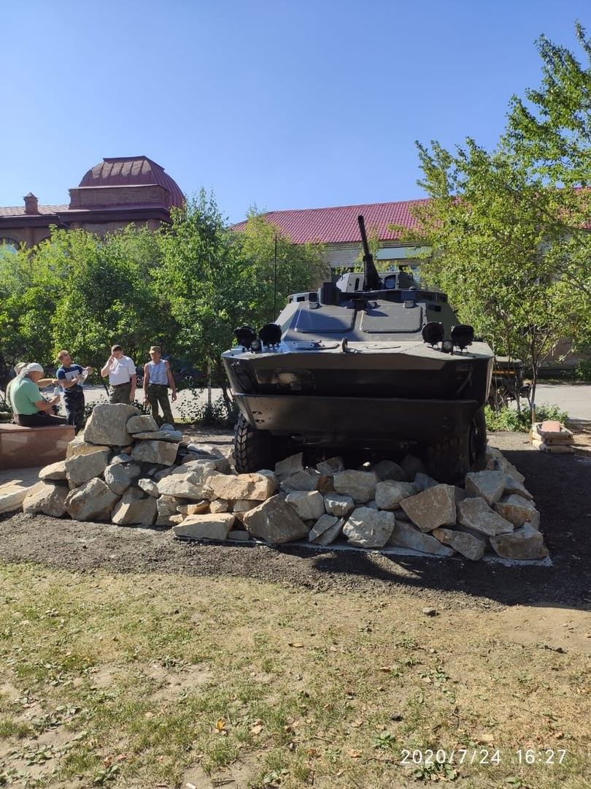


Открытие памятника—зто целое событие!Событие уже в масштабах района! На открытие приехали все неравнодушные. Приехали военачальники Центрального военного округа, казачество, генералы МВД. Это событие всколыхнуло не только ветеранов, сидящих в квартирах, но и руководителей Домов культуры, клубов, библиотек с предложениями о проведении тематических вечеров, внеклассных занятий, организации военно—спортивных игр, направленных на улучшение физической формы и патриотической направленности среди молодого населения. В июле был отмечен день ветеранов локальных войн. Не были забыты и женщины. Женам офицеров были вручены памятные награды. Был организован фуршет.